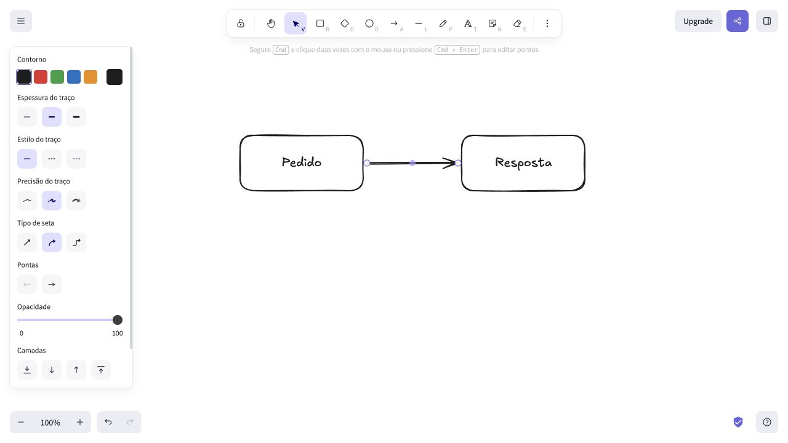
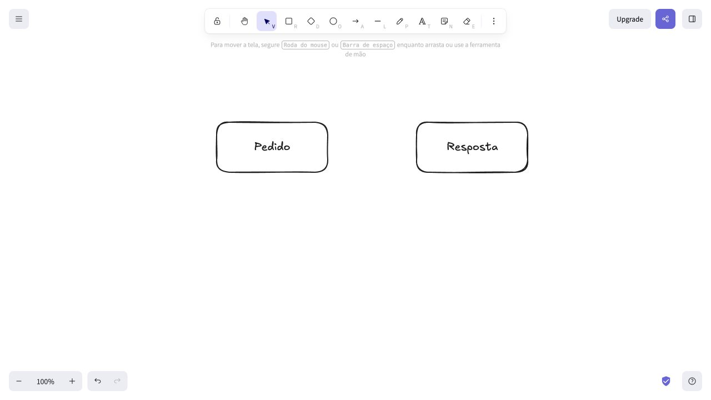

AMOSTRA INDEPENDENTE · 04 OUT 2026
Ajuda baseada
no que aconteceu.
Excalidraw público, interface em português, navegador no Mac. Tarefas executadas pelo Codex em uma cena fictícia. Não houve cliente, autorização do fornecedor ou publicação na central oficial.
O ensaio completo também exigia exportar imagem, salvar arquivo editável e restaurá-lo em outra aba. Esses critérios não foram todos cumpridos. Os dois procedimentos abaixo são a parte observada, sujeita a revisão antes de qualquer incorporação.
Procedimento observadoCriar um fluxo de duas etapas
- Abra uma cena de teste em Excalidraw. Use a ferramenta Retângulo para desenhar as duas caixas.
- Inclua os textos Pedido e Resposta nas caixas.
- Use Flecha para conectar as duas formas.
- Confira os dois rótulos e o vínculo da seta antes de compartilhar o desenho.

Resultado observado: as duas formas, os rótulos e a seta ficaram visíveis. A imagem registra esse estado; não demonstra exportação, persistência ou compatibilidade com todo navegador.
Procedimento observadoRecuperar uma seta apagada
- Na cena de teste, selecione apenas a seta.
- Apague-a e confira que as duas caixas continuam na tela.
- Acione Desfazer.
- Confira novamente a seta e seus dois vínculos.

Estado após a exclusão.
Resultado observado: Desfazer recuperou a seta nessa sessão. Isso não substitui backup e não comprova recuperação depois de fechar o navegador.
Instruções retidasOnde a ajuda ainda não está pronta
Uma observação posterior produziu PNG na área de transferência e restaurou os cinco elementos por copiar, apagar e colar na mesma aba. Textos, geometria relativa e vínculos coincidiram; IDs e posição absoluta mudaram.
Falta conferir: download da imagem, arquivo editável salvo e restauração desse arquivo em outra aba. Não publicamos uma instrução de backup como se tivesse passado por esse teste.
Também não houve incorporação numa central, mudança real de versão, manutenção aceita ou medição de redução de dúvidas. A amostra mostra preparação editorial parcial, não um serviço contratado ou vantagem econômica comprovada.
Descrever um procedimento público